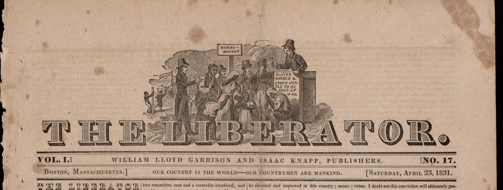

NAŠA MINULOSŤ
Príbeh novín The Liberator
Noviny založil William Lloyd Garrison v Bostone a začali vychádzať 1. januára 1831.
„Myslím to vážne – nebudem hovoriť neurčito – nebudem sa ospravedlňovať – neustúpim ani o piaď – a BUDEM VYPOČUTÝ!“ — Garrison, prvé vydanie

KAPITOLA I
Vznik a poslanie
Prvé číslo The Liberator vyšlo v Bostone 1. januára 1831. Jeho zakladateľ William Lloyd Garrison si kladie za cieľ bojovať proti otroctvu bez kompromisov a požaduje jeho okamžité zrušenie. V čase, keď mnohí politici uprednostňujú postupné riešenia, Garrison odmieta čakať na vhodnejšie okolnosti. Verí, že sloboda je prirodzeným právom každého človeka a že žiadne ekonomické ani politické záujmy nemôžu ospravedlniť zotročovanie ľudí. Motto novín znie: „Our Country is the World, our Countrymen are all Mankind.“ Naša vlasť je svet a našimi krajanmi sú všetci ľudia.
KAPITOLA II
William Lloyd Garrison
William Lloyd Garrison (1805 – 1879) je novinár, vydavateľ a jeden z najvýraznejších predstaviteľov amerického abolicionizmu. Svojimi textami napáda otroctvo aj spoločenské a politické inštitúcie, ktoré ho tolerujú. Jeho presvedčenie sa prejavuje aj v spôsobe, akým píše: priamo, nekompromisne a s dôrazom na morálnu zodpovednosť. Garrison verí, že verejná mienka sa môže zmeniť, ak ľudia prestanú zatvárať oči pred utrpením zotročených. Aj keď ho niektorí považujú za príliš radikálneho a jeho požiadavky za nebezpečné pre existujúci politický poriadok, Garrisonov cieľ je pokračovať v začatom hnutí až dokonca.
KAPITOLA III
Význam pre abolicionistické hnutie
The Liberator poskytuje priestor argumentom proti otroctvu, správam o abolicionistických aktivitách a hlasom ľudí, ktorí požadujú rovnosť. Pomáha šíriť myšlienku, že otroctvo nie je iba politickou otázkou, ale aj otázkou ľudských práv a morálky. Význam našich novín nespočíva len v informovaní. Sú aj nástrojom mobilizácie verejnosti a miestom, kde sa stretávajú rôzne názory na cestu k emancipácii. Týždenník zároveň podporuje práva žien a spochybňuje predstavu, že boj za rovnosť sa týka iba jednej skupiny obyvateľstva.
KAPITOLA IV
Fungovanie a udalosti do roku 1859
Dnes, takmer dvadsaťdeväť rokov po vydaní prvého čísla, The Liberator naďalej presadzuje okamžité zrušenie otroctva. Spojené štáty sú však v otázke otroctva stále hlboko rozdelené a nedávne udalosti v Harpers Ferry opäť ukazujú, aké napätie tento spor vyvoláva. Redakcia pokračuje v kritike otroctva, politických kompromisov a zákonov, ktoré podľa nej umožňujú pokračovanie nespravodlivosti. Budúcnosť krajiny zostáva neistá. Jedno je však jasné: The Liberator sa nemieni vzdať svojho poslania, kým otroctvo zostáva skutočnosťou amerického života.
Our Country is the World, our Countrymen are all Mankind.
← Späť na titulnú stranu